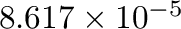
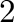
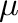

The Monte Carlo code needs the following files as an input
- A lattice geometry file (lat.in), which is the same as the input for maps (see Table 5.1).
- Files providing the cluster expansion (the clusters used are listed in the clusters.out file while the corresponding ECI are
listed in the eci.out file.). These files are automatically
generated by maps, although users can supply their own cluster expansion, if desired. A description of the
format of these files is available by typing maps -h.
- A list of ground states (gs_str.out), which merely provide convenient starting configurations for the simulations.
maps also automatically creates this file.
The parameters controlling the simulation are specified as command-line options.
The first input parameter(s) needed by the code are the phase(s) whose thermodynamic
properties are to be determined. There are two ways to invoke the Monte Carlo
simulation code. When the command emc2 is used, a single Monte Carlo simulation
is run to allow the calculation of thermodynamic properties of a single phase for
the whole region of chemical potential and temperature where that phase is stable.
The phase of interest is specified by a command-line option of the form
-gs= , , |
where is a number between  and (inclusive), where is the number of ground states.
The value indicates the disordered phase while values ranging from to indicate the phases associated
with each ground states ( denoting the ground state with the smallest composition).
When the command phb is used, two Monte Carlo simulations are run simultaneously
to enable the determination of the temperature-composition phase boundary associated with
a given two-phase equilibrium. The two phases are specified by
It is possible to compute a two-phase equilibrium between phases defined on a different parent lattice.
In this case, the user needs to specify the directories where the cluster expansions of
each lattice resides using the options of the form
and (inclusive), where is the number of ground states.
The value indicates the disordered phase while values ranging from to indicate the phases associated
with each ground states ( denoting the ground state with the smallest composition).
When the command phb is used, two Monte Carlo simulations are run simultaneously
to enable the determination of the temperature-composition phase boundary associated with
a given two-phase equilibrium. The two phases are specified by
It is possible to compute a two-phase equilibrium between phases defined on a different parent lattice.
In this case, the user needs to specify the directories where the cluster expansions of
each lattice resides using the options of the form
| -d1=directory 1 -d2=directory 2 |
The accuracy of the thermodynamic properties obtained from Monte-Carlo
simulations is determined by two parameters: The size of the simulation cell
and the duration of the simulation.
The size of the simulation cell is specified by providing the radius of a sphere
through the command-line option
As illustrated in Figure 5.3a, the simulation cell size will be the
smallest supercell that both contains that sphere and that is commensurate with
the unit cell of the ground state of interest.
This way of specifying the simulation cell size ensures that the system size
is comparable along every direction, regardless of the crystal structure of
the ground state of interest. It also frees the user from manually checking the
complicated requirement of commensurability. It is important that the user check
that the simulation cell size is sufficiently large for the thermodynamic properties
of interest to be close to their infinite-system-size limiting value. This can be done
by gradually increasing the system size until the calculated quantities become
insensitive to the further increases in system size, within the desired accuracy.
Figure 5.3:
Definitions of the quantities used to specify a) the simulation cell size and b) the chemical potential.
|
|
The duration of the simulations is automatically determined by the code from a user-specified target precision on the atomic composition of the phase,
indicated by a command-line option of the form
Alternatively, the user may also manually set the number of
Monte Carlo steps the system is allowed to equilibrate before
thermodynamic averages are computed over a certain number of Monte Carlo steps using the options
The Monte Carlo code also needs additional parameters that specify which portion
of a phase's free energy surface needs to be computed. With emc2, the range of
temperatures to be scanned are specified in either one of the
following two ways:
| -T0= -T1= -dT= (for steps in direct temperature) |
| or -T0= -T1= -db= (for steps in reciprocal temperature).
|
The temperature steps in reciprocal temperature () can be useful when
calculations are started from infinite temperatures down to a finite temperature.
The -T1 and -dT (or -db) options can be omitted if calculations at a single temperature
are desired. Since the program automatically stops when a phase transition is detected,
it is not necessary to know in advance the temperature range of stability of the phase. The
user only needs to ensure that the initial temperature lies within the region of stability
of the phase of interest. An obvious starting
point is , since the ground state is then stable, by definition.
With the phb code, the syntax is
If the -T option is omitted, calculations start at absolute
zero.5.4The energy and temperature units used are set by specifying the Boltzman's constant with the
command-line option
A value of
 corresponds to energies
in eV and temperatures in Kelvin.
With emc2, the range of chemical potentials to be scanned needs to be specified.
Once again, only the starting point really matters, because the code will stop when a
phase transition is reached.
By default, chemical potentials are given in a dimensionless form, so as to
facilitate the link between the value of the chemical potential and the
phase that it stabilizes. For instance, a chemical potential equal to is
such that it would stabilize a two phase equilibrium between phase number
 and phase number at absolute zero (see Figure 5.3b). A chemical potential between
and stabilizes phase number at absolute zero. While these ranges of
stability are no longer exact at finite temperature, this dimensionless chemical
potential still provides easy-to-interpret input parameters. The syntax is
where is the chemical potential step between each new simulation.
Chemical potentials
can also be entered in absolute value (say in eV, if the energies are in eV) by
specifying the -abs option.
Note that the output files always give the absolute chemical potentials, so that
thermodynamic quantities can be computed from them.
With phb, the initial chemical potential is optional when starting from absolute
zero because the code can determine the required value from the ground state energies.
It can nevertheless be specified (in absolute value) with the -mu= option, if a finite temperature starting point is desired.
A list of the command line options of either the emc2 or phb codes can be displayed by simply typing either command by itself.
More detailed help is displayed using the -h option.
avdw@alum.mit.edu Sat, Jun 21, 2025 12:31:12 AM